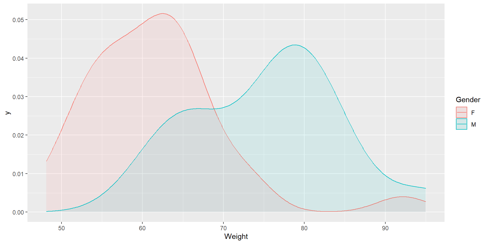

Week 2: The Normal Distribution and Estimation
EBBRMS Mock Tutorial
2024-07-26
Aim
- Introduce the concepts of sampling, the Normal distribution, standard errors and confidence intervals.
Material for this week is available under
Week 2 - Normal Distribution and Estimation:
Learning Outcomes
- Understand the difference between a sample and the population it is drawn from
- Understand what a random sample is and how it is generated;
- Understand what a research hypothesis is and how we can investigate it;
- Understand what the standard error is and how it is related to the standard deviation;
- Understand and explain what a Confidence Interval is;
- Calculate a confidence interval for a mean in large (>30) samples.
Recap - What is meant by SE?
- Error in clinical trial measures
- A standardised measure of validity for evidence in medicine
- Standard deviation of the sample means
- Standard deviation of the population means
Recap - What is meant by a 95% confidence interval?
- An interval that contains true value of the population parameter with 95% confidence.
- An interval that contains true value of the population parameter with 5% confidence.
- An interval that contains true value of the sample parameter with 95% confidence.
- Helps us avoid running a signficance test.
Recap - How would the confidence interval change if 90% limits were used?
- Narrower
- Wider
- No Change
- Make us certain in our claim
Recap - How would the confidence interval change if 99% limits were used?
- Narrower
- No Change
- Wider
- Make us doubt our claim
Setting-up
Start > IBM SPSS Statistics > Right-Click > Open File Location

To follow along for this week you will need to launch the R for SPSS Graphical User Interface (GUI).
R Graphical User Interface

Left you see the console with output and Right is your Script with R syntax using SPSSS.
Making your Analysis Reproducible
File > New Script/Open Script > 02_normal_distributions.R
Type your syntax in the console and press Enter to run.
To revisit this work we will need to save our working in a file called a script.
Follow this presentation by creating a new script named 02_normal_distributions.R
Save your work.
Run individual lines of code by highlighting these.
Right click> Run line or selectionor use the short-cutCtrl+R.
R Integration for SPSSS
To tap into the SPSSS extension for R we will load the following library, essentially this is a collection of code that will allow us to integrate R and SPSS syntax to make our working reproducible:
Question 1: Random Samples
The goal is to generate an artificial sample of numbers, draws, from a normal distribution. This is a pseudo-random draw, it depends on an underlying algorithm your computer uses based on its internal clock, so there is some level of predictability. It is important to fix, seed, the starting point of this process so that we can replicate the same values every time we return to our work.
Replace the number or seed, with your Student ID.
Question 1 (i) Generate Random Samples
Question 1 (ii) Summary of Samples
library(psych)
library(knitr)
summary_samples <- rbind(SmallSample1 = describe(small_sample,quant=c(.25,.75) ),
ModerateSample2 = describe(moderate_sample,quant=c(.25,.75) ),
LargeSample3 = describe(large_sample,quant=c(.25,.75)) )
summary_samples <- summary_samples[,c("mean","se", "sd", "min", "Q0.25", "median", "Q0.75", "max")]
kable(summary_samples)| mean | se | sd | min | Q0.25 | median | Q0.75 | max | |
|---|---|---|---|---|---|---|---|---|
| SmallSample1 | 110.9571 | 1.0735229 | 6.441137 | 93.50679 | 106.1052 | 110.3815 | 115.6452 | 125.0159 |
| ModerateSample2 | 109.3169 | 0.5680517 | 5.680517 | 96.18580 | 104.8715 | 109.4313 | 113.5190 | 119.5016 |
| LargeSample3 | 110.1009 | 0.0599389 | 5.993886 | 84.52663 | 105.9707 | 110.1073 | 114.0598 | 131.7264 |
Hard to see any pattern, other than SE getting smaller proportional to √n.
Question 1 (ii) Summary of Samples
Note how much easier it is to see what’s going on when looking at all the students’ samples. Mean: (over all the students’ samples) less variability as n increases. All boxplots centred on population mean of 110 (as samples are unbiased random samples from population). Clear that distribution of means for each sample size is normally distributed (though it’s hard to see for samples of size 10,000 as that boxplot looks so small at this scale).
Question 1 (ii) Summary of Samples - Boxplots
Question 1 (ii) Summary of Samples
mean_samples <- rbind(mean36 = describe(student_samples$mean36,quant=c(.25,.75) ),
mean100 = describe(student_samples$mean100,quant=c(.25,.75) ),
mean10000 = describe(student_samples$mean10000,quant=c(.25,.75)) )
mean_samples <- mean_samples[,c("mean","se", "sd", "min", "Q0.25", "median", "Q0.75", "max")]
kable(mean_samples)| mean | se | sd | min | Q0.25 | median | Q0.75 | max | |
|---|---|---|---|---|---|---|---|---|
| mean36 | 110.0111 | 0.1087047 | 0.9351131 | 107.5459 | 109.4985 | 109.9518 | 110.5132 | 112.9679 |
| mean100 | 110.0289 | 0.0670192 | 0.5765207 | 108.9444 | 109.5756 | 110.0343 | 110.5386 | 111.1858 |
| mean10000 | 110.0038 | 0.0078261 | 0.0673228 | 109.8664 | 109.9641 | 109.9961 | 110.0521 | 110.1777 |
Note that the SD of the sample means (0.935 for the samples of size 36 (mean36), 0.577 for mean100 and 0.0673 for mean10000 in the table above) are all approximately equal to what the true value of the SE is for samples of this size (1 for n=36, 0.6 for n=100 and 0.06 for n=10000). This is as the SE is the SD of the means of a particular sample size.
SD_samples <- rbind(SD36 = describe(student_samples$SD36,quant=c(.25,.75) ),
SD100 = describe(student_samples$SD100,quant=c(.25,.75) ),
SD10000 = describe(student_samples$SD10000,quant=c(.25,.75)) )
SD_samples <- SD_samples[,c("mean","se", "sd", "min", "Q0.25", "median", "Q0.75", "max")]
kable(SD_samples)| mean | se | sd | min | Q0.25 | median | Q0.75 | max | |
|---|---|---|---|---|---|---|---|---|
| SD36 | 6.034012 | 0.0801203 | 0.6892206 | 4.250833 | 5.647067 | 6.091607 | 6.481475 | 7.347794 |
| SD100 | 5.953934 | 0.0503051 | 0.4327407 | 5.215649 | 5.674223 | 5.940636 | 6.144307 | 7.680219 |
| SD10000 | 6.005421 | 0.0054227 | 0.0466478 | 5.889353 | 5.976222 | 6.002927 | 6.042780 | 6.101471 |
SD: (over all students’ samples) are like the mean – less variability as n increases; all centred on population SD of 6. You only need the data from a single sample to get what you need to create a confidence interval.in
SE_samples <- rbind(SE36 = describe(student_samples$SE36,quant=c(.25,.75) ),
SE100 = describe(student_samples$SE100,quant=c(.25,.75) ),
SE10000 = describe(student_samples$SE10000,quant=c(.25,.75)) )
SE_samples <- SE_samples[,c("mean","se", "sd", "min", "Q0.25", "median", "Q0.75", "max")]
kable(SE_samples)| mean | se | sd | min | Q0.25 | median | Q0.75 | max | |
|---|---|---|---|---|---|---|---|---|
| SE36 | 1.0056687 | 0.0133534 | 0.1148701 | 0.7084721 | 0.9411778 | 1.0152679 | 1.0802459 | 1.2246324 |
| SE100 | 0.5953934 | 0.0050305 | 0.0432741 | 0.5215649 | 0.5674223 | 0.5940636 | 0.6144307 | 0.7680219 |
| SE10000 | 0.0600542 | 0.0000542 | 0.0004665 | 0.0588935 | 0.0597622 | 0.0600293 | 0.0604278 | 0.0610147 |
SE: Gets smaller as n increases; specifically by factor of √n. Also estimates become less variable as n increases. Rather than having to create many samples to estimate these we can just use the estimates of the SE from our single samples (in my case SE=0.910 for my n=36 sample (C1), 0.569 for my n=100 sample (C2) and 0.0609 for my n=10000 sample (C3) from the first table above).
Question 1 (iii) Further Plots
- Small sample (n=36)
- Dotplot
- Individual value plot
- Boxplot
- Histogram
- Moderate sample (n=100)
- Boxplot
- Histogram
- Large sample (n=10,000)
- Boxplot
- Histogram
- (Dotplot and individual value plot less useful, though dotplot could work if each dot represents several data points)
Question 1 (iii) Further Plots
Q1 (v) Calculating Confidence Intervals
For n=36 sample, mean = 110.96, SE = 6.4411371 / √36 = 1.0735229
Step 1:
95% CI lower limit is 110.96-1.96*1.074 = 108.85496
Step 2:
95% CI lower limit is 110.96+1.96*1.074 = 113.06504
Step 3:
So 95% CI for population mean from my n=36 sample is ( 108.85496 , 113.06504 )
For n=100 sample, mean = 109.32, SE = 5.6805167 / √100 = 0.5680517
95% CI lower limit is 109.32-1.96*0.568 = 108.20672
95% CI lower limit is 109.32+1.96*0.568 = 110.43328
So 95% CI for population mean from my n=100 sample is ( 108.20672 , 110.43328 )
For n=10000 sample, mean = 110.1, SE = 5.9938857 / √100 = 0.0599389
95% CI lower limit is 110.1-1.96*0.06 = 109.9824
95% CI lower limit is 110.1+1.96*0.06 = 110.2176
So 95% CI for population mean from my n=10000 sample is (109.9824 , 110.2176)
Question 2
Professor Whimsy has taken the heights of 100 randomly sampled 5-year-old boys from Glasgow as he is interested in whether boys in Glasgow are on average shorter than the UK as a whole, where the average height of 5-year-old boys is known to be 110cm. He has told you that the mean height in the sample is 108.92cm and the standard deviation of the heights is 5.77cm and has asked you to analyse the data
Question 2 (i)
Calculate the 95% confidence interval by hand. Interpret the result. Is there evidence that 5-year old boys from Glasgow are shorter than those in the rest of the UK.
108.92 +/- 1.96 * 5.77/√100 (107.78908, 110.05092)
The sample estimate of the mean is 108.92 cm, just over 1 cm lower than 110 cm. We have 95% confidence that the population mean height of 5-year old boys in Glasgow is between 107.79 and 110.05cm, with our best estimate being 108.92cm. Since this CI contains 110cm, there is no significant evidence (at the 5% significance level) that Glaswegian 5-year old boys are shorter than UK average. However, the upper CI is borderline. Overall from these data we can say that whilst Glaswegian children may be the same height on average as children in the rest of the UK, they may be up to 2cm shorter. Remember that we are assuming that the data are an independent representative (or better still random) sample (see next week’s workbook for more about this)!
Question 2 (ii)
Professor Whimsy has somewhat eccentric ideas on statistics and says he much prefers the 93% confidence interval. Calculate this interval by hand and interpret the result.
The critical value is 1.81 instead of 1.96 for a 93% CI.
108.92 +/- 1.81 * 5.77/√100 (107.78908, 109.96437)
The population mean height of 5-year old boys in Glasgow is between 107.88 and 109.96cm with 93% confidence, with our best estimate being 108.92cm. This CI does not contain 110cm, so there is some evidence (at the 7% significance level) that Glaswegian 5-year-old boys are shorter than UK average. However, the upper CI is very close to 110cm, so any height reduction may be very small.
Question 2 (iii)
Explain the difference between them. Why might a 93% confidence interval not be as useful as a 95% one?
93% CI is narrower than 95% CI as it has a lower confidence of containing the population mean. Whilst 95% is an arbitrary choice, its use helps to ensure consistency across research, so care must be taken using any alternative, especially if it changes the interpretation of the results.
Question 3 - LDL at Baseline of ALERT RCT
alert_sample <- read_excel("data/alert_rct.xlsx")
alert_sample_b <- describe(alert_sample$ldl_b,quant=c(.25,.75) )
alert_sample_b <- alert_sample_b[,c("mean","se", "sd", "min", "Q0.25", "median", "Q0.75", "max")]
kable(alert_sample_b)| mean | se | sd | min | Q0.25 | median | Q0.75 | max | |
|---|---|---|---|---|---|---|---|---|
| X1 | 4.113497 | 0.0318585 | 0.9963094 | 1.3 | 3.4 | 4.1 | 4.7 | 8.2 |
Number of missing observations is 22
Question 3 - LDL at Baseline of ALERT RCT
For n=978 sample, mean = 4.11, SE = 0.9963094 / √100 = 0.0318585
95% CI lower limit is 4.11-1.96*0.0996309 = 4.04728
95% CI lower limit is 4.11+1.96*0.0996309 = 4.17272
So 95% CI for population mean from my n=10000 sample is (4.04728 , 4.17272)
Question 3 - LDL at Baseline
The sample estimate of baseline, 4.11 mmol/L, is just over 1 mmol/L greater than the upper limit of the normal upper limit of 3 mmol/L. We can say with 95% confidence that baseline LDL in population of renal transplant patients is between 4.05 and 4.18 mmol/L.
Thus renal transplant patients have LDL cholesterol that is on average at least 1 mmol/L higher than the upper limit of the normal range. Due to the large sample size we have a very precise estimate of the population average. These patients are therefore obvious candidates in which to test the effectiveness of statins at reducing LDL and more importantly whether they reduce the rate at which major adverse cardiac events (e.g. stroke or MI) happen. We obviously need to assume that the data are an independent representative sample (the sample can’t be perfectly random).
Question 4 - Normal Distribution Plot Height
Question 4 - Normal Distribution Plot Weight
Question 4 - Normal Distribution Plot Weight
Height: p = 0.39 (>0.05) – no evidence to reject null hypothesis of Normality (at 5% significance level) [Anderson-Darling method] Weight: p = 0.04 (<0.05) – evidence to reject null hypothesis of Normality (at 5% significance level) [Anderson-Darling method]
Both height and weight are in general Normally distributed. However, this is only likely to be true for young adults within each sex. What we have is a mixture of 2 Normal distributions for weight (and height). If we consider males and females separately, they should both look normal. Also note that tests for normality should be treated with caution, as in small samples they lack power to detect data from non-normal distributions and in large samples they can give significant results when the deviations are irrelevantly small.
Question 4 - Normal Distribution Plot Weight

Final Question !
What is the probability that the 5 year old schoolboys have height (height ~ N(110,62))

Next Week - Remember the Big Picture!
Week 3 - Confidence Intervals and Hypothesis Tests
Question of interest (Research Hypothesis)
Experiment on sample
Graphs and summary statistics
Subjective answer to question
Formal Analysis/Statistical Inference
(Evidence, Relevance)
population
sample
sample
sample
population